Regresión lineal
Clase 3
2 de abril de 2025
Motivación
Pregunta de investigación
Imaginemos que nos interesa estudiar la relación entre la escolaridad y el ingreso.
En particular, queremos estimar los rendimientos de un año adicional de escolaridad en los ingresos.
Datos
La Encuesta Nacional de Ingresos y Gastos de los Hogares (ENIGH) tiene información sobre los ingresos de los hogares y la escolaridad de los miembros de los hogares.
Tomé a las personas que están en edad de trabajar en la ENIGH 2022: entre 18 y 65 años.
Sumé todos los ingresos que reportó cada persona.
Creé una tabla que se llama
poblacionque contiene los ingresos, el nivel aprobado, la edad y el sexo de cada persona.Adicionalmente, creé una variable que se llama
escolaridadque contiene el número de años de escolaridad aprobados por cada persona.
Exploración de los datos
Exploración de los datos
Antes de estimar cualquier modelo, es importante entender cómo se distribuyen los datos.
Una lista de preguntas para responder antes de estimar:
¿Cómo se distribuyen las variables de interés?
¿Cómo trataremos la presencia de datos atípicos?
¿Qué otras variables pueden ser importantes para incluir en el modelo?
Descripción de los datos por nivel aprobado
Descripción de los datos por nivel aprobado
# A tibble: 10 × 6
nivelaprob n ingreso edad poblacion mujeres
<fct> <int> <dbl> <dbl> <dbl> <dbl>
1 Ninguno 5650 4148. 49.2 2236391 0.576
2 Preescolar 70 3972. 33.7 20893 0.414
3 Primaria 38089 6265. 47.4 14830016 0.521
4 Secundaria 57612 7450. 39.0 22574676 0.533
5 Preparatoria o bachillerato 43238 8554. 32.9 18935175 0.503
6 Normal 1114 13660. 46.0 446774 0.692
7 Carrera técnica o comercial 5963 10435. 45.6 2825467 0.683
8 Profesional 35631 14010. 34.8 16981533 0.520
9 Maestría 2372 26496. 43.0 1268431 0.540
10 Doctorado 506 30857. 45.7 302129 0.528Clase factor
Notemos que la variable nivelaprob tiene clase factor.
Esta clase es útil para representar variables categóricas.
Asigna on orden a una serie de categorías, lo que facilita ordenar categorías por su nivel.
Por esto,
Ningunoes menor quePrimaria, que es menor queSecundaria, etc.Una librería del tidyverse que facilita el trabajo de variables categóricas es
forcats.

Distribución de nivel aprobado
El nivel aprobado determinará el número de años de escolaridad, que será nuestra variable independiente.
poblacion |>
ggplot(aes(x = nivelaprob, y = factor)) +
stat_summary(
aes(y = factor),
fun = sum,
geom = "bar",
fill = "lightblue",
color = "black"
) +
scale_y_continuous(labels = scales::comma) +
labs(
x = "Nivel aprobado",
y = "Personas",
title = "Distribución de la población por nivel aprobado",
subtitle = "ENIGH 2022"
) +
coord_flip()Distribución de nivel aprobado
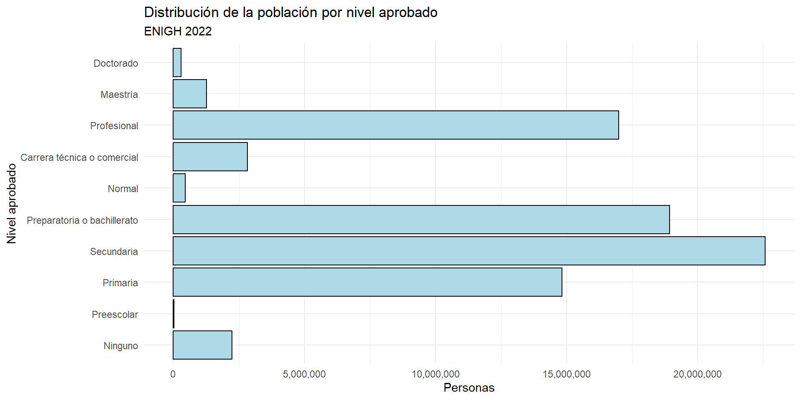
Distribución del ingreso
El ingreso será nuestra variable dependiente.
poblacion |>
ggplot(aes(x = ingreso)) +
geom_histogram(
aes(y = ..density..),
bins = 50,
fill = "lightblue",
color = "black"
) +
geom_density(
aes(y = ..density..),
color = "blue"
) +
scale_x_log10(labels = scales::dollar) +
labs(
x = "Ingreso mensual (escala logarítmica)",
y = "Densidad",
title = "Distribución de los ingresos",
subtitle = "ENIGH 2022"
) Distribución del ingreso
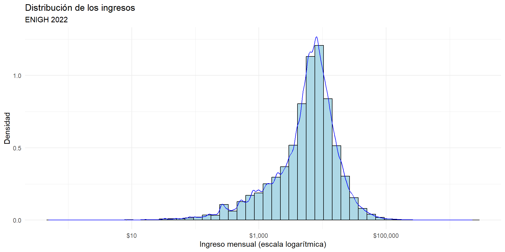
Distribución del ingreso después de truncar
poblacion <- poblacion |>
filter(
ingreso < quantile(ingreso, 0.99, na.rm = TRUE),
ingreso > quantile(ingreso, 0.01, na.rm = TRUE)
)
poblacion |>
ggplot(aes(x = ingreso)) +
geom_histogram(
aes(y = ..density..),
bins = 50,
fill = "lightblue",
color = "black"
) +
geom_density(
aes(y = ..density..),
color = "blue"
) +
scale_x_log10(labels = scales::dollar) +
labs(
x = "Ingreso mensual (escala logarítmica)",
y = "Densidad",
title = "Distribución de los ingresos",
subtitle = "ENIGH 2022, truncado al 1% superior e inferior"
)Distribución del ingreso después de truncar
Ingreso promedio por nivel aprobado
Una manera de aproximarnos a la relación entre escolaridad e ingreso es calcular el ingreso promedio por nivel aprobado.
# A tibble: 10 × 6
nivelaprob ingreso_prom sd n lower upper
<fct> <dbl> <dbl> <int> <dbl> <dbl>
1 Ninguno 3830. 4063. 4059 3705. 3955.
2 Preescolar 4153. 3129. 53 3311. 4995.
3 Primaria 5653. 5329. 29975 5593. 5713.
4 Secundaria 6973. 5833. 46034 6920. 7026.
5 Preparatoria o bachillerato 8026. 6765. 34270 7954. 8097.
6 Normal 13021. 8456. 994 12496. 13547.
7 Carrera técnica o comercial 9541. 7709. 4745 9322. 9760.
8 Profesional 12349. 9272. 28685 12241. 12456.
9 Maestría 19768. 11131. 2053 19287. 20250.
10 Doctorado 22276. 11789. 427 21158. 23394.Ingreso promedio por nivel aprobado
niveles |>
ggplot(aes(x = nivelaprob, y = ingreso_prom)) +
geom_pointrange(
aes(
ymin = lower,
ymax = upper
)
) +
scale_y_continuous(
labels = scales::dollar,
breaks = seq(5000, 40000, 5000)
) +
labs(
x = "Nivel aprobado",
y = "Ingreso promedio",
title = "Ingreso promedio por nivel aprobado",
subtitle = "Intervalos de confianza del 95%"
) Ingreso promedio por nivel aprobado
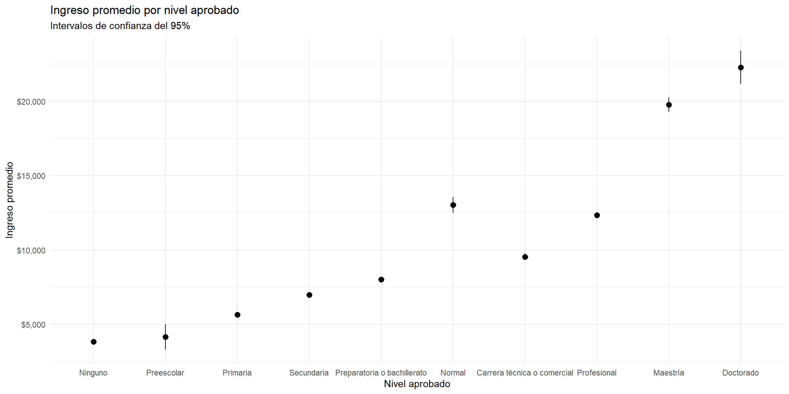
Distribución del ingreso por nivel aprobado y sexo
A pesar de que los promedios son muy informativos, esconden la distribución de los datos.
Adicionalmente, queremos preguntarnos si el ingreso es diferente para hombres y mujeres, para cada nivel aprobado.
El diagrama de caja y brazo (boxplot) visualiza la distribución de los datos mostrando:
La mediana (línea negra),
El rango intercuartílico (IQR) (caja): el conjunto de valores centrales que acumulan el 50% de los datos.
Los brazos, que son los valores que están dentro de 1.5 veces el IQR.
Los puntos que están fuera de los brazos son considerados outliers.
Distribución del ingreso por nivel aprobado y sexo
poblacion |>
ggplot(
aes(
x = nivelaprob,
y = ingreso,
fill = sexo
)) +
geom_boxplot(alpha = 0.5) +
scale_y_log10(labels = scales::dollar) +
labs(
x = "Nivel aprobado",
y = "Ingreso mensual (escala logarítmica)",
title = "Distribución del ingreso por nivel aprobado y sexo",
fill = ""
) +
theme(legend.position = "top") Distribución del ingreso por nivel aprobado y sexo
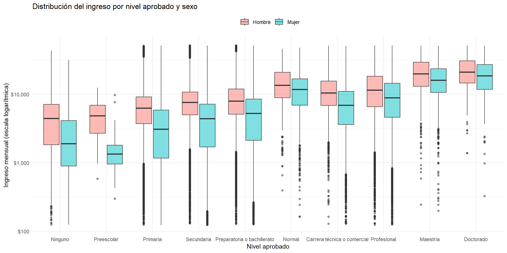
Escolaridad y edad
Otra variable que puede ser importante para el ingreso es la edad:
Puede estar correlacionada con escolaridad, porque las personas más viejas han tenido más tiempo para estudiar.
También puede estar correlacionada con el ingreso, porque las personas más viejas tienen más experiencia y más apego al mercado laboral.
Escolaridad y edad
Imputación de años de escolaridad según el nivel aprobado
La ENIGH incluye el nivel y el grado de estudios aprobados, reportados por cada persona.
Pero no incluye los años de escolaridad.
Creé la variable escolaridad a partir de la variable nivelaprob y gradoaprob.
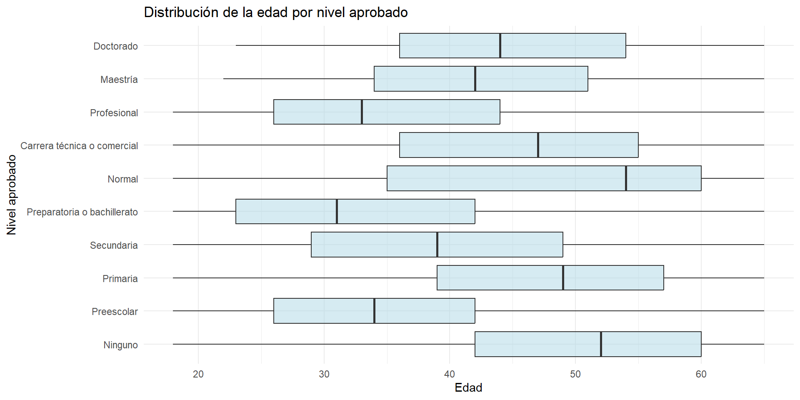
Relación no paramétrica entre escolaridad e ingreso
Decimos que estimamos un modelo no paramétrico cuando le permitimos al modelo que se ajuste a los datos sin imponerle una forma funcional.
La función ggplot2::geom_smooth() ajusta un modelo no paramétrico a los datos, de la siguiente manera:
\[ Y_i = f(X_i) + \epsilon_i \qquad(1)\]
donde:
\(Y_i\) es el variable dependiente: el ingreso de la persona \(i\),
\(X_i\) es la variable independiente: la escolaridad de la persona \(i\), y
\(f(\cdot)\) es una función que se ajusta a los datos.
\(\epsilon_i\) es el error de estimación de la persona \(i\).
Dependiendo de las características de los datos, geom_smooth() ajusta diferentes tipos de modelos no paramétricos.
Relación no paramétrica entre escolaridad e ingreso
poblacion |>
ggplot(aes(x = escolaridad, y = ingreso)) +
stat_summary() + # Promedio y IC
geom_smooth() + # Ajuste no paramétrico
scale_y_log10(labels = scales::dollar) +
labs(
x = "Escolaridad",
y = "Ingreso mensual",
title = "Relación entre escolaridad e ingreso",
subtitle = "Tamaño de los puntos proporcional al número de personas"
) +
theme(legend.position = "top") +
scale_size_continuous(
range = c(1, 10),
labels = scales::comma,
name = "Personas"
) Relación no paramétrica entre escolaridad e ingreso
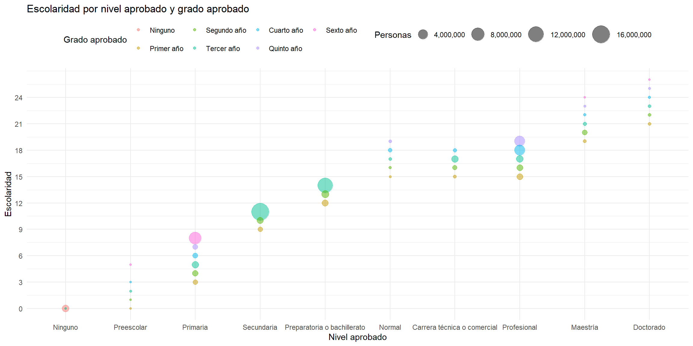
Conclusiones de la exploración
Las personas que reportan un nivel aprobado más alto tienen salarios más altos en promedio.
Las mujeres reportaron ingresos, dado que tienen el mismo nivel aprobado, en todos los niveles aprobados.
La distribución de la edad es diferente para cada nivel aprobado. Las personas sin escolaridad som más viejas.
-
No hay una manera perfecta de imputar la escolaridad, pero podemos ver que se acumulan datos en el último grado de cada nivel aprobado, lo que sugiere que esas personas completaron el nivel.
- Esto puede ser importante para la estimación de los rendimientos de la escolaridad: puede ser que aprobar el último grado de un nivel tenga un efecto más grande que aprobar el primer grado de un nivel.
La imputación de escolaridad parece reflejar correctamente la relación entre escolaridad e ingreso.
Modelo de regresión lineal
Modelo de regresión lineal
Ya sabemos bien cuál es el ingreso promedio por año de escolaridad.
Sin embargo, todavía nos falta estimar cuánto aumenta el ingreso por cada año adicional de escolaridad: el rendimiento de la escolaridad.
Simulación de un modelo de regresión lineal
Imaginemos un mundo en el que el ingreso solo depende de la escolaridad.
En este mundo, el ingreso se determina como función de la escolaridad de la siguiente manera:
\[ Y_i = 1000 + 200 X_i + \epsilon_i \qquad(2)\]
donde:
\(Y_i\) es el ingreso de la persona \(i\),
\(X_i\) es la escolaridad de la persona \(i\),
\(\epsilon_i\) es el error de estimación de la persona \(i\), distribuido \(N(\mu = 0, \sigma = 1,000)\).
Una persona sin educación (\(X_i=0\)) en promedio tendrá \(1,000\).
Después, por cada año adicional de escolaridad, el ingreso aumentará en promedio \(200\).
Pero, como hay un error de estimación, no todas las personas con la misma escolaridad tendrán el mismo ingreso.
Simulación de un modelo de regresión lineal
Simulación de un modelo de regresión lineal
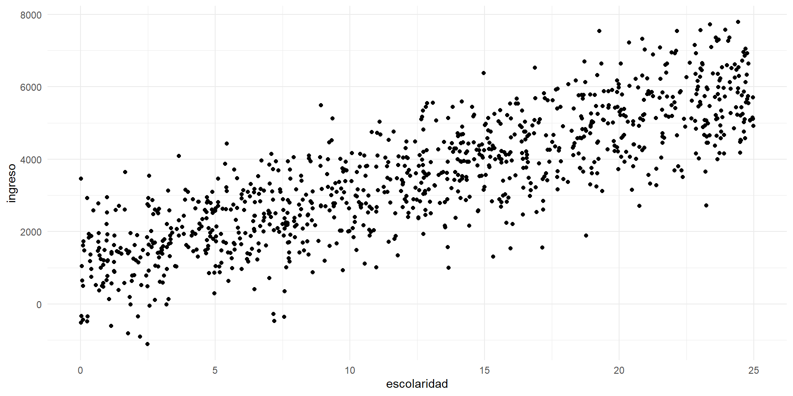
Modelo de regresión lineal
Ahora, si no conociéramos el proceso de generación de datos, podríamos preguntarnos cuál es el rendimiento de la educación es este mundo.
Podemos estimar un modelo de regresión lineal, descrito con la siguiente ecuación:
\[ y_i=\beta_0 + \beta_1 x_i + \epsilon_i \qquad(3)\]
donde:
\(\beta_0\) es el intercepto del modelo, que representa el ingreso promedio de una persona sin escolaridad (\(X_i=0\)).
\(\beta_1\) es la pendiente del modelo, que representa el rendimiento de la escolaridad: el cambio en el ingreso por cada año adicional de escolaridad.
\(\epsilon_i\) es el error de estimación de la persona \(i\), que representa la diferencia entre su ingreso real y el ingreso estimado por el modelo. Asumimos que \(\epsilon_i\) es distribuido \(N(\mu = 0, \sigma^2)\).
Vamos a buscar los valores de \(\beta_0\) y \(\beta_1\) que mejor se ajusten a los datos.
Estimación del modelo
Ejemplo 1 Imaginemos que una persona tomadora de decisiones nos propone que:
\[ \beta_0=0; \quad \beta_1=300 \]
Podemos calcular el ingreso estimado \(\hat y_i\) de cada persona y el error de estimación \(\hat \epsilon_i\):
Estimación del modelo
Estimación del modelo
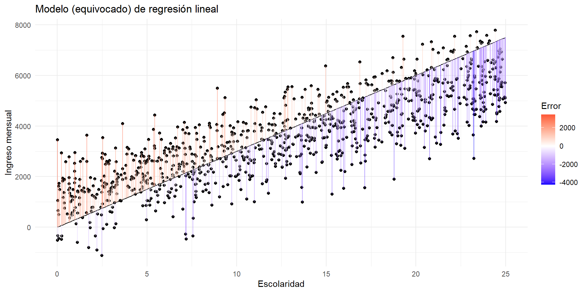Bondad de ajuste
¿Qué tan bien se ajusta el modelo a los datos observados?
Hay muchas métricas para evaluar el ajuste de un modelo de regresión lineal.
Una métrica común es la raíz cuadrada del error cuadrático medio (RMSE por sus siglas en inglés):
\[ RMSE = \sqrt{\frac{1}{n} \sum_{i=1}^n \hat \epsilon_i^2} \qquad(4)\]
Elevamos al cuadrado el error para penalizar los errores negativos y positivos, y penalizar más a los errores grandes.
Sacamos raíz cuadrada para que la métrica esté en la misma escala que la variable dependiente.
RMSE
# A tibble: 1 × 1
rmse
<dbl>
1 1247.En promedio, el modelo planteado por la persona tomadora de decisiones tiene un error de estimación de \(1,244\).
Este error es mayor a la desviación estándar de los ingresos, que es \(1,000\).
Estimación por mínimos cuadrados
Mínimos cuadrados ordinarios (MCO) es un método común para estimar los parámetros de un modelo de regresión lineal.
Lo que hace es minimizar la suma de los cuadrados de los errores de estimación.
Podríamos hacer la derivación de la función de error y encontrar los valores de \(\beta_0\) y \(\beta_1\) que minimizan la suma de los cuadrados.
Pero no lo haremos aquí, porque R lo hace por nosotros.
Estimación del modelo
La función base para estimar regresiones por MCO es stats::lm().
El lenguaje para describirle a R el modelo que queremos estimar es:
En nuestro caso, el modelo es:
Call:
lm(formula = ingreso ~ escolaridad, data = ingresos_simulados)
Residuals:
Min 1Q Median 3Q Max
-2919.33 -629.56 10.84 638.19 2731.78
Coefficients:
Estimate Std. Error t value Pr(>|t|)
(Intercept) 1044.491 60.275 17.33 <2e-16 ***
escolaridad 195.571 4.122 47.44 <2e-16 ***
---
Signif. codes: 0 '***' 0.001 '**' 0.01 '*' 0.05 '.' 0.1 ' ' 1
Residual standard error: 948.6 on 998 degrees of freedom
Multiple R-squared: 0.6928, Adjusted R-squared: 0.6925
F-statistic: 2251 on 1 and 998 DF, p-value: < 2.2e-16Estimación del modelo
Visualización del modelo MCO
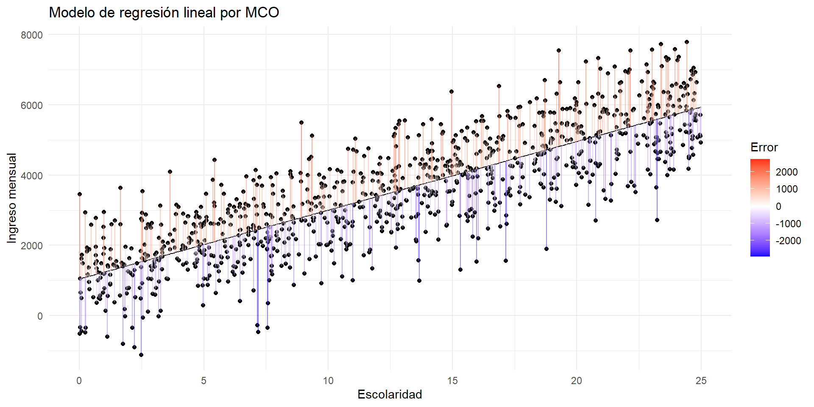Visualización del modelo MCO
Comparación de los modelos
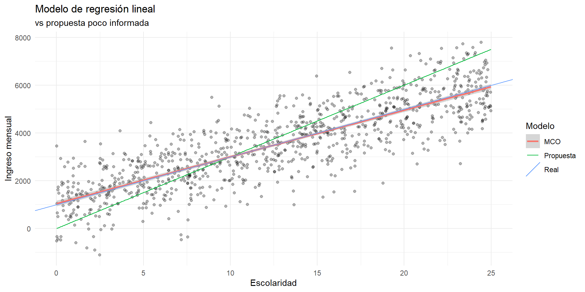Comparación de los modelos
Una vez que tenemos los dos modelos, podemos comparar el error de estimación de cada uno.
# A tibble: 1 × 2
rmse_1 rmse_2
<dbl> <dbl>
1 1247. 948.El modelo estimado con MCO tiene un RMSE más bajo que el modelo propuesto, porque MCO encuentra la línea que minimiza el error de estimación.
Volviendo a la vida real
Rendimientos de la escolaridad
Para modelos lineales, la función fixest::feols() tiene mejor rendimiento que lm(), además de que es más fácil presentar resultados usando fixest::etable().
feols() guarda la misma sintaxis que lm().
Rendimientos de la escolaridad
Rendimientos de la escolaridad
```{r}
#| results: asis
# Ojo para producir esta tabla en Quarto. Necesitamos:
# 1. Incluir la opción etable(..., markdown = T)
# 2. Usar `results: asis` en la opciones del chunk (ver arriba)
etable(
ingresos_fit,
poblacion_fit,
title = "Modelo de regresión lineal",
fitstat = ~ n + r2 + my + f,
markdown = T,
headers = list("Simulación" = 1, "ENIGH 2022" = 1)
)
```En promedio, un año adicional de escolaridad está relacionado con un ingreso adicional de $571 pesos al mes.
En promedio, una persona sin escolaridad tiene un ingreso mensual de $1,364.
-
\(R^2\) es una métrica de bondad de ajuste que mide la proporción de la varianza de la variable dependiente que es explicada por el modelo.
La escolaridad explica el 12% de la variación del ingreso en la población, mientras que el modelo simulado explica el 70% de la variación del ingreso.
Esto es esperado, porque definimos el modelo simulado de tal manera que la escolaridad es la única variable que afecta el ingreso.
Inferencia para coeficientes
Variabilidad en los estimadores
Estudiaremos la variabilidad de los estimadores de los coeficientes del modelo MCO en el mundo simulado que tenemos.
Imaginemos que tomamos métricas de escolaridad y de ingresos en una muestra aleatoria diferente, pero que comparte las características de la población simulada original.
ingresos_simulados_2 <- tibble(
id = 1:n,
escolaridad = runif(n, min = 0, max = 25),
ingreso = 1000 + (200 * escolaridad) + rnorm(n, mean = 0, sd = 1000)
)
ingresos_sim_fit <- feols(ingreso ~ escolaridad, data = ingresos_simulados)
ingresos_sim_fit_2 <- feols(ingreso ~ escolaridad, data = ingresos_simulados_2)
etable(
ingresos_sim_fit,
ingresos_sim_fit_2,
fitstat = ~ n + r2 + my + f,
markdown = T,
headers = list("Simulación 1" = 1, "Simulación 2" = 1)
) Encontramos que los coeficientes han variado al usar una muestra diferente.
Variabilidad en los estimadores
Ahora cuantificaremos la variabilidad de los estimadores de los coeficientes para muchas muestras aleatorias, para entender cómo se distribuyen.
n_sim <- 10000
simular_datos <- function(x, n = 1000) {
tibble(
id = 1:n,
escolaridad = runif(n, min = 0, max = 25),
ingreso = 1000 + (200 * escolaridad) + rnorm(n, mean = 0, sd = 1000)
)
}
simulaciones <- tibble(
id = 1:n_sim,
simulacion = map(id, simular_datos),
fit = map(simulacion, ~ feols(ingreso ~ escolaridad, data = .x)),
coef = map(fit, coef),
intercept = map_dbl(coef, 1),
escolaridad = map_dbl(coef, 2)
) |>
select(id, intercept, escolaridad) Variabilidad en los estimadores
Variabilidad en los estimadores
simulaciones_long <- simulaciones |>
pivot_longer(
cols = c(intercept, escolaridad),
names_to = "coef",
values_to = "valor"
)
simulaciones_long |>
ggplot(aes(x = valor)) +
geom_histogram(
aes(y = ..density..),
bins = 50,
fill = "lightblue",
color = "black"
) +
geom_density(
aes(y = ..density..),
color = "blue"
) +
# Add means
geom_vline(
data = simulaciones_long |>
summarise(
.by = coef,
mean = mean(valor)
),
aes(xintercept = mean),
color = "red",
linetype = "dashed"
) +
facet_wrap(~ coef, scales = "free") +
labs(
x = "Valor del coeficiente",
y = "Densidad",
title = "Distribución de los coeficientes MCO",
subtitle = "10,000 simulaciones, n = 1,000"
)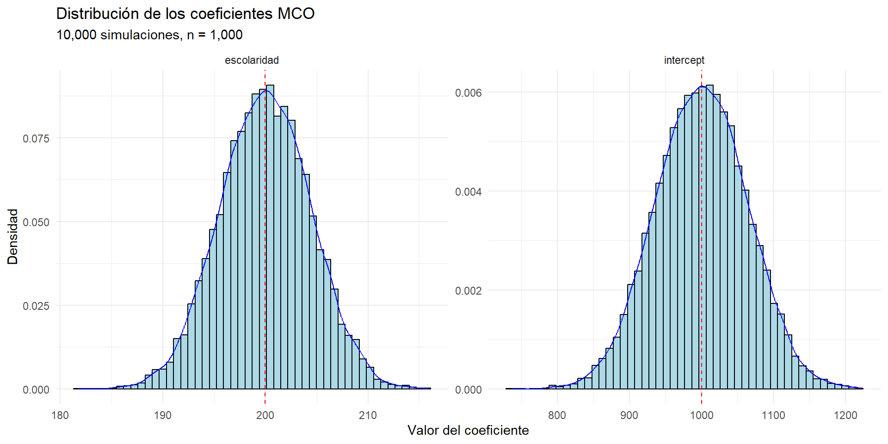
-
Los coeficientes de MCO siguen una distribución normal.
- Esto sigue de que su interpretación es promedio.
-
¡La media de los coeficientes estimados es igual al verdadero valor de los coeficientes!
Esto es una propiedad de los estimadores de MCO: son insesgados.
Esto significa que, en promedio, el estimador de MCO es igual al verdadero valor del parámetro.
La inferencia de los coeficientes sigue de la misma manera que una prueba de hipótesis de un promedio.
Inferencia para coeficientes
Regresemos a la tabla de coeficientes, donde podremos encontrar algunas pruebas de hipótesis ya calculadas.
El error estándar de los coeficientes es una medida de la variabilidad de los estimadores, en la misma escala que los coeficientes.
Si multiplicamos el error estándar por 1.96, obtenemos un intervalo de confianza del 95% para el coeficiente.
Si el intervalo de confianza no incluye 0, podemos rechazar la hipótesis nula de que el coeficiente es igual a 0.
Las estrellas indican para qué niveles de significancia podemos rechazar la hipótesis nula de que el coeficiente es igual a 0.
Adicionalmente, la prueba F es una prueba conjunta de la relevancia del modelo completo. Un valor mayor a 100 indica que el modelo es relevante.
Nuestros dos modelos, el simulado y el de la ENIGH, tienen un coeficiente de escolaridad significativo al 1% y son modelos relevantes.
Sesgo por variable omitida
Educación e ingresos
Queremos estimar el efecto de la escolaridad en los ingresos.
Sin embargo, puede haber una variable habilidad que determina tanto la escolaridad como el ingreso.
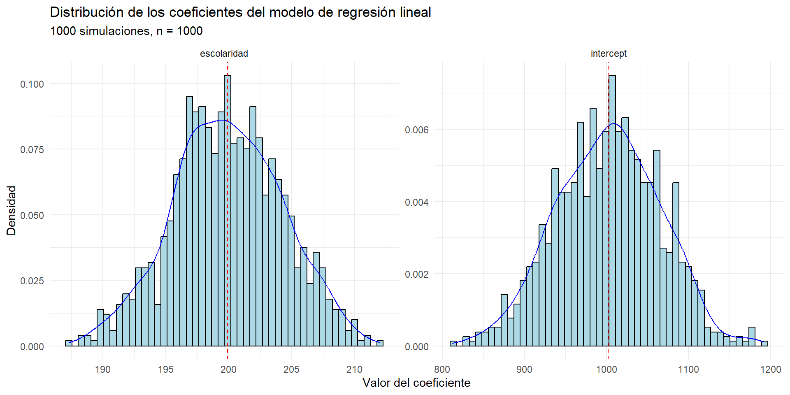
¿Cómo afectaría la omisión de la variable habilidad a la estimación del modelo de regresión lineal?
Sesgo por variable omitida
En la ENIGH no tenemos información sobre la variable habilidad…
¡Pero podemos simularla!
El modelo que omitió la variable
habilidadsobreestimó el efecto de la escolaridad en el ingreso.Esto siempre pasará cuando exista una variable omitida que esté correlacionada con la variable dependiente y con la variable independiente.
El modelo MCO solo será insesgado cuando no haya variables omitidas.
Sesgo por variable omitida
Regresión lineal múltiple
Regresión lineal múltiple
En el ejemplo de variable omitida, definimos una variable
habilidadque afecta tanto a la escolaridad como a el ingreso.-
Para evitar el sesgo por variable omitida, simplemente incluimos la variable
habilidaden el modelo de regresión lineal:- Acabamos con un modelo con dos variables independientes, sin hablar mucho de la teoría detrás de la regresión lineal múltiple.
En esta sección, quiero formalizar el concepto de regresión lineal múltiple y su interpretación.
Regresión lineal múltiple
Supongamos que queremos estimar el modelo de regresión lineal:
\[ y_i = \beta_0 + \beta_1 x_{i} + \beta_2 c_{i} + \epsilon_i \qquad(5)\]
Donde:
\(y_i\) es la variable dependiente: el ingreso de la persona \(i\),
\(x_i\) es la variable independiente de interés: la escolaridad de la persona \(i\),
\(c_i\) es una variable independiente de control: la habilidad de la persona \(i\)
Decimos que el modelo en la Ecuación 5 es lineal porque la variable dependiente es una combinación lineal de las variables independientes.
Y decimos que es múltiple porque tiene más de una variable independiente.
El tratamiento de este tipo de modelos es muy similar al de regresión lineal simple, pero hay que tener cuidado con la interpretación de los coeficientes.
Interpretación de los coeficientes
Interpretamos los coeficientes del modelo en la Ecuación 5 de la siguiente manera:
El intercepto \(\beta_0\) representa el ingreso promedio de una persona sin escolaridad y con habilidad = 0.
El coeficiente \(\beta_1\) representa el rendimiento de la escolaridad: el cambio en el ingreso por cada año adicional de escolaridad, dejando la habilidad constante.
El coeficiente \(\beta_2\) representa el cambio en el ingreso por cada unidad adicional de habilidad, dejando la escolaridad constante.
En general, podemos decir que el coeficiente \(\beta_k: k>0\) representa el cambio en la variable dependiente por cada unidad adicional de la variable \(k\), todo lo demás constante.
Regresión lineal múltiple con la ENIGH 2022
Recordemos de la sección de estadística descriptiva que las variables sexo y edad también pueden ser determinantes del ingreso y de la escolaridad.
- No incluirlas puede sesgar el estimador del rendimiento de la escolaridad.
Correlación entre ingreso, escolaridad, edad y sexo
Revisemos empíricamente si sexo y edad están correlacionadas con ingreso y escolaridad.
- Necesitamos un modelo por cada par de variables:
poblacion |>
feols(c(ingreso, escolaridad) ~ sw(edad, sexo)) |>
etable(
title = "Correlación entre ingreso, escolaridad, edad y sexo",
fitstat = ~ n + r2 + my + f,
markdown = T
)Para saber si existe correlación, podemos ir a la prueba F, que indica la relevancia del modelo completo.
Las pruebas F de todas las regresiónes son más grandes que 100, lo que indica que todos los modelos son relevantes y que
sexoyedadestán correlacionadas coningresoyescolaridad.
Implementación del modelo
Veamos cómo afecta la estimación del rendimiento de la escolaridad al incluir edad y sexo en el modelo, una por una:
simple_fit <- feols(ingreso ~ escolaridad, data = poblacion)
multiple_fit_1 <- feols(ingreso ~ escolaridad + edad, data = poblacion)
multiple_fit_2 <- feols(ingreso ~ escolaridad + sexo, data = poblacion)
multiple_fit_3 <- feols(ingreso ~ escolaridad + edad + sexo, data = poblacion)
etable(
simple_fit,
multiple_fit_1,
multiple_fit_2,
multiple_fit_3,
title = "Modelo de regresión lineal múltiple",
fitstat = ~ n + r2 + ar2 + my + f,
markdown = T
) Interpretación de los coeficientes
Agregar
edadysexoalivia la preocupación de que puedan estar sesgando el estimador del rendimiento de la escolaridad.-
Sin embargo, cambiará la interpretación de los coeficientes:
El intercepto en la columna (2), ahora representa el ingreso promedio de una persona sin educación y de edad = 0. Este estimador carece de sentido en este contexto.
El coeficiente de
escolaridaden la columna (2) indica que un año adicional de escolaridad está asociado con un aumento de $655 en el ingreso, dejando la edad constante.
-
Sexo es una variable dicotómica.
El intercepto de la columna (3) representa el ingreso promedio de un hombre sin escolaridad.
El coeficiente de
escolaridaden la columna (3) indica que un año adicional de escolaridad está asociado con un aumento de $586 en el ingreso, dejando el sexo constante.El coeficiente de
sexoindica que, en promedio, las mujeres tienen un ingreso $3,100 menor que los hombres, dejando la escolaridad constante.
Al incluir ambas variables, el coeficiente de
escolaridaden la columna (4) indica que un año adicional de escolaridad está asociado con un aumento de $672.6 en el ingreso, dejando las demás variables constantes.
Bondad de ajuste
En el modelo de regresión lineal sencillo, descrito por la Ecuación 3, hablamos de que el estadístico \(R^2\) mide la bindad de ajuste del modelo: la proporción de la varianza de la variable dependiente que es explicada por la variable independiente.
En el mundo de la regresión lineal múltiple, la interpretación cambia.
Agregar una variabla al modelo siempre va a aumentar la \(R^2\), porque siempre va a poder explicar más proporción de la varianza de la variable dependiente.
En regresión múltiple, la \(R^2\) ajustada penaliza por la inclusión de variables, para intentar aproximar la \(R^2\) a la proporción de varianza explicada por el modelo.
En la tabla de coeficientes, agergar los controles al modelo sí mejora el ajuste del model.
Resumen
La regresión lineal múltiple es una extensión de la regresión lineal simple, que permite incluir más de una variable independiente.
La interpretación de los coeficientes cambia, porque ahora representan el efecto de la variable independiente en la variable dependiente, dejando las demás variables constantes.
La regresión lineal múltiple es útil para controlar por variables que pueden estar sesgando el estimador de la variable de interés.
Muy importante: sin importar cuántos controles agreguemos, siempre habrá una variable omitida que puede estar sesgando los resultados.
-
Para esto, hay métodos experimentales y cuasi-experimentales que pueden ayudar a identificar el efecto causal de una variable sobre otra.
Tristemente, no podremos cubrir estos métodos en este curso.
Pero Cunningham (2021) es un excelente libro para aprender más sobre inferencia causal.
Efectos fijos
Motivación
Imaginemos que mostramos a alguien nuestro modelo de regresión lineal múltiple y nos dice:
Pero no estás tomando en cuenta que en distintos municipios hay diferentes niveles de ingreso, costos de vida, y niveles de escolaridad. Puedes solo estar midiendo la varianza que hay entre municipios que son diferentes entre sí.
Esta es una crítica muy válida.
Comparación al interior de un municipio
Podríamos empezar a atender esta crítica comparando el ingreso de las personas al interior de un municipio en particular.
Por ejemplo, en Azcapotzalco, CDMX.
Algo que todavía no discutimos es que la ENIGH es una encuesta, por lo que, para tener un estimador representativo, tenemos que ponderar por el factor de expanción usando el argumento
weightsde la funciónfeols().
azcapotzalco <- poblacion |>
filter(cve_ent == "09", cve_mun == "002") # Azcapotzalco, CDMX
pob_fit <- poblacion |>
feols(ingreso ~ escolaridad + edad + sexo, weights = ~factor)
azc_fit <- azcapotzalco |>
feols(ingreso ~ escolaridad + edad + sexo, weights = ~factor)
etable(
pob_fit,
azc_fit,
title = "Nacional vs Azcapotzalco",
fitstat = ~ n + r2 + ar2 + my + f,
markdown = T,
headers = list("Nacional" = 1, "Azcapotzalco" = 1)
)Comparación al interior de un municipio
Encontramos que la el rendimiento de la educación en Azcapotzalco es algo mayor que en la población nacional.
Podríamos replicar el ejercicio para cada municipio y después tomar un promedio ponderado de todos los rendimientos de la escolaridad.
Sin embargo, esto no es práctico.
Modelo de efectos fijos
El modelo de efectos fijos es una manera de controlar por las diferencias entre municipios.
Introduce una variable indicadora por cada municipio, que toma el valor 1 si la persona pertenece a ese municipio y 0 si no.
Esto permite controlar por diferencias entre municipios, para medir el rendimiento de la escolaridad dentro de cada municipio.
Si introducimos efectos fijos por municipio, atenderemos la crítica de que hay heterogeneidad entre municipios.
Modelo de efectos fijos
El modelo de efectos fijos se puede escribir de la siguiente manera:
\[ y_{i} = \alpha + \beta x_i + C_i \gamma + \lambda_m + \epsilon_i \]
Donde:
\(y_i\) es la variable dependiente: el ingreso de la persona \(i\),
\(x_i\) es la variable independiente de interés: la escolaridad de la persona \(i\),
\(C_i\) es un vector de variables de control, tales como la edad y el sexo de la persona \(i\),
\(\lambda_m\) son efectos fijos por municipio.
Incluir el término \(\lambda_m\) en el modelo es equivalente a incluir una variable indicadora por cada municipio.
Estimación
fixest es el paquete perfecto para estimar modelos de efectos fijos.
- Simplemente agregamos la variable
municipiodespués de un|al final de la fórmula del modelo.
Interpretación
Incluir efectos fijos no cambia mucho la magnitud del rendimiento de la escolaridad.
- Dentro de cada municipio, un año adicional de escolaridad está asociado con un aumento de $647.3 en el ingreso, todo lo demás constante.
Variables dicotómicas
Variables dicotómicas
Ya incluímos la variable sexo en el modelo de regresión lineal múltiple.
-
A pesar de que
sexoestá codificada como un factor en la tablapoblacion, la pudimos incluir en el modelo, y R la interpretó como una variable dicotómica.En particular usó,
sex == "Female"como variable independiente.Esto nos permite interpretar el coeficiente de
sexocomo el efecto diferencial de ser mujer en el ingreso, todo lo demás constante.
Discriminación por género
Vale la pena que retomemos el ejemplo de la Clase 2 sobre la discriminación por género.
- Cargamos los datos del experimento que explora si existe discriminación por género en la decisión de promoción para gerente de banco en Estados Unidos.
Prueba de hipótesis
En la Clase 2, hicimos una prueba de hipótesis en la que encontramos que la tasa de promoción era tan diferente entre hombres y mujeres, que podíamos rechazar la hipótesis nula de que no había discriminación por género.
Ahora, veremos cómo podemos incluir la variable
sexen un modelo de regresión lineal sencillo para hacer la misma prueba de hipótesis.Para tener la interpretación correcta, vamos a crear nuevas variables indicadoras (que toman el valor 1 o 0) para
femaleypromoted.
Modelo de probabilidad lineal
El modelo que estimaremos es:
\[ y_i = \alpha + \tau x_i + \epsilon_i \qquad(6)\]
Donde:
\(y_i\) es la variable dependiente: si la candidata \(i\) fue promovida,
\(x_i\) es la variable independiente de interés: si la candidata \(i\) es mujer,
\(\alpha\) es el intercepto: la tasa (o probabilidad) de promoción cuando \(X_i = 0\), es decir, cuando el candidato es hombre.
\(\tau\) es el coeficiente de la variable independiente: la diferencia en la tasa de promoción entre hombres y mujeres.
Por que el sexo de la candidata es aleatorio y ortogonal a las demás características de la candidata, podemos decir que \(\tau\) es el efecto causal de que la candidata sea mujer en la probabilidad de promoción.
- Decimos que el modelo descrito en la Ecuación 6 es un modelo de probabilidad lineal porque la variable dependiente es una variable dicotómica (0 o 1).
Estimación
Interpretación
La probabilidad de promoción para un hombre es de 87%.
-
El efecto causal de ser mujer en la probabilidad de promoción es de -0.29.
- Este efecto es significativo al 5%.
Pendientes diferentes
Rendimiento de la escolaridad por género
Ya estimamos el rendimiento de la escolaridad promedio controlando por sexo.
- Una pregunta adicional es si el rendimiento de la escolaridad es diferente entre hombres y mujeres.
Modelo de regresión lineal con interacción
Para estimar el rendimiento de la escolaridad por género, podemos usar un modelo de regresión lineal con interacción descrito por:
\[ y_i = \beta_0 + \beta_1 e_i + \beta_2 s_i + \beta_3 (e_i \times s_i) + \epsilon_i \qquad(7)\]
Donde:
\(y_i\) es la variable dependiente: el ingreso de la persona \(i\),
\(e_i\) es la variable independiente de interés: los años de escolaridad de la persona \(i\),
\(s_i\) es una variable dicotómica que toma el valor 1 si la persona es mujer y 0 si es hombre.
El término \(e_i \times s_i\) es el producto de las dos variables independientes, que en regresión llamamos: interacción entre sexo y educación. Usar la interacción nos permite estimar un rendimiento diferencial de la escolaridad para mujeres respecto de hombres.
Coeficientes
\(\beta_0\) es el ingreso promedio de una persona sin escolaridad y cuyo sexo es hombre.
\(\beta_1\) es el rendimiento de la escolaridad para hombres: el cambio en el ingreso por cada año adicional de escolaridad.
\(\beta_2\) es la diferencia en el ingreso que tienen las mujeres sin escolaridad respecto a los hombres sin escolaridad.
\(\beta_3\) (tiene la interpretación más complicada) es el cambio en el rendimiento de la escolaridad para mujeres respecto a hombres: Es la diferencia en rendimiento a la escolaridad que tienen las mujeres respecto a los hombres.
Evaluar si \(\beta_3\) es diferente de 0 nos permite evaluar si el rendimiento de la escolaridad es diferente entre hombres y mujeres.
En otras palabras, la prueba de hipótesis definida por \(H_0: \beta_3 = 0\) responderá la pregunta de si las mujeres se benefician de la escolaridad de la misma manera que los hombres, o si el rendimiento de la escolaridad es diferente entre hombres y mujeres.
Estimación
Interpretación
-
En promedio el rendimiento de la escolaridad es $18.5 menor para las mujeres que para los hombres.
El efecto es significativo al 5%.
Transofrmación de variables en regresión lineal
Transformación polinomial
Recordemos de la sección de estadística descriptiva que estimamos el ingreso promedio por escolaridad.
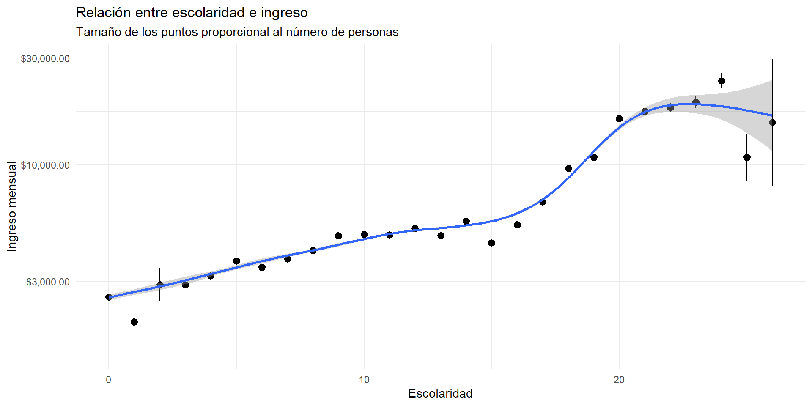
La relación entre escolaridad e ingreso parece ser no lineal: para algunos años de escolaridad, el rendimiento es mayor que para otros: la pendiente de la línea de regresión cambia.
La regresión no paramétrica modela bien esta relación no lineal, pero no nos da la información sobre el rendimiento de la escolaridad que queremos.
Modelo
Podemos incluir el efecto no lineal de la escolaridad usando una versión de la ecuación de Mincer:
\[ y_i = \beta_0 + \beta_1 e_i + \beta_2 e_i^2 + \epsilon_i \qquad(8)\]
Decimos que el modelo {Ecuación 8} sigue siendo un modelo lineal porque la transformación que hicimos a la variable independiente entra de manera lineal al modelo.
Estimación
Estimación
<div class = "etable"><img src = "./images/etable/etable_tex_2025-04-23_1616937349.png"></div>Interpretación
La interpretación de los coeficientes como se rpesentan en la tabla de coeficientes es complicada.
- Porque estamos proponiendo que el rendimiento de la escolaridad es no lineal, tenemos que calcular el rendimiento de la escolaridad en un punto específico de la curva.
Estimate Std. Error z Pr(>|z|) S 2.5 % 97.5 %
-388 15.08 -25.7 <0.001 481.6 -417 -358
138 8.03 17.2 <0.001 218.0 122 154
664 3.99 166.3 <0.001 Inf 656 672
1190 9.06 131.4 <0.001 Inf 1172 1208
1804 17.43 103.5 <0.001 Inf 1769 1838
Term: escolaridad
Type: response
Comparison: dY/dX